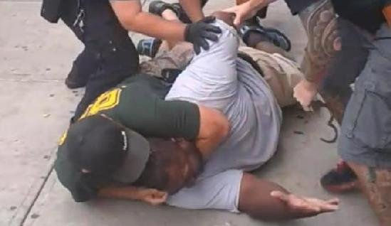

|
|
||
| Established 2014 | "All The News That's The Shit" | Number 69 |
Public Service Announcement
Apparently, choking related deaths have increased in African-American males in the past year-it is now third behind high blood pressure and hypertension. Happily, the 4th and 5th causes-the Ebola virus and getting a plunger shoved up your ass-have steadily decreased in the past 12 months!

Here Officer David Donato demonstrates the proper way to use the Heimlich on Rufus McKeaton of Staten Island.
In a related story, Mr. Mckeaton died choking to death. According to Officer Donato:
"The Poor guy must have had a large piece of watermelon or fried chicken lodged in his gullet. Even the Heimlich couldn't save him."